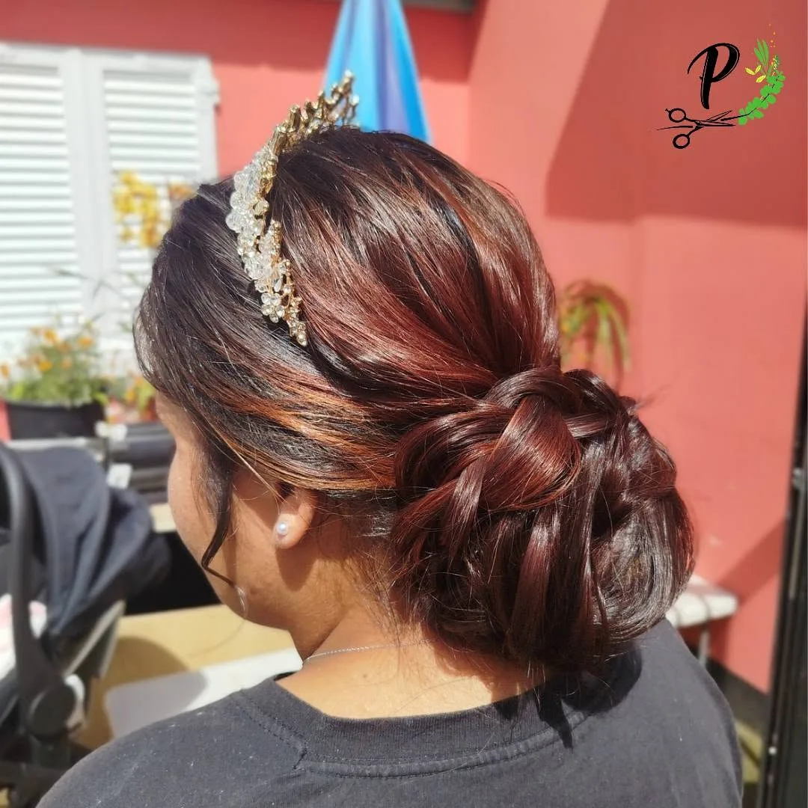
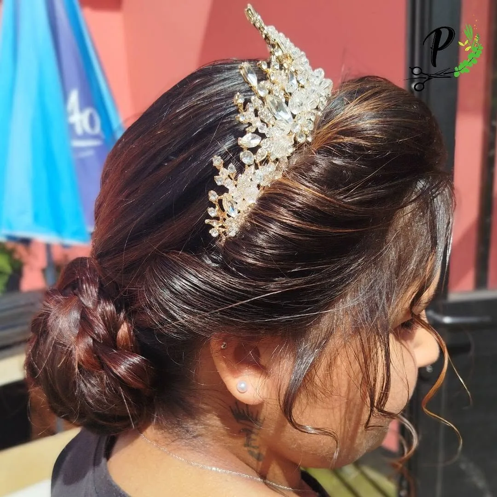
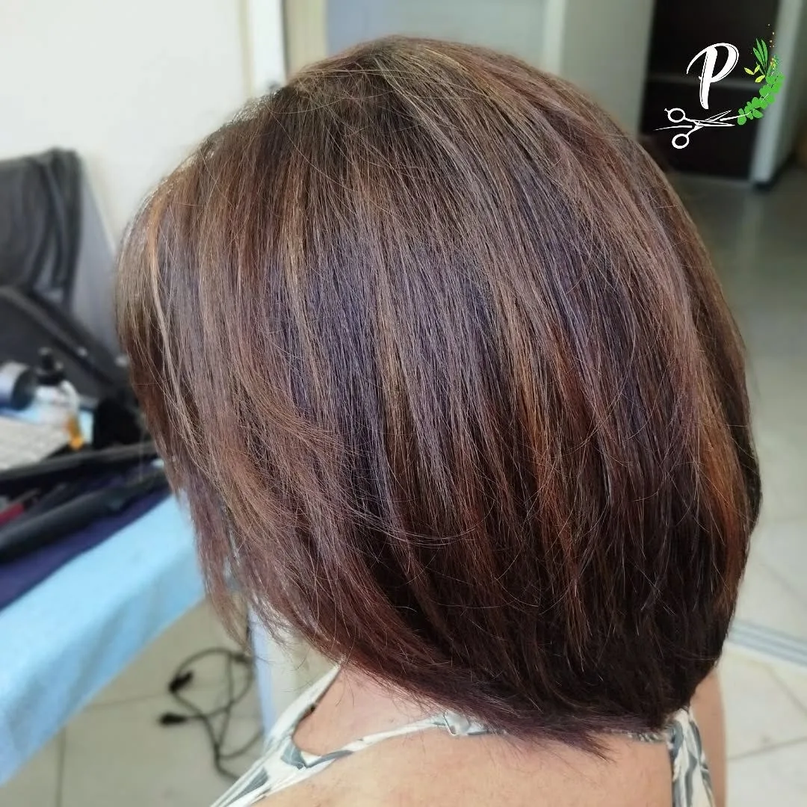
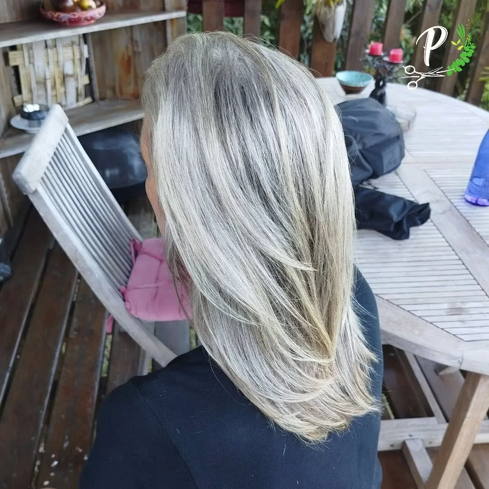
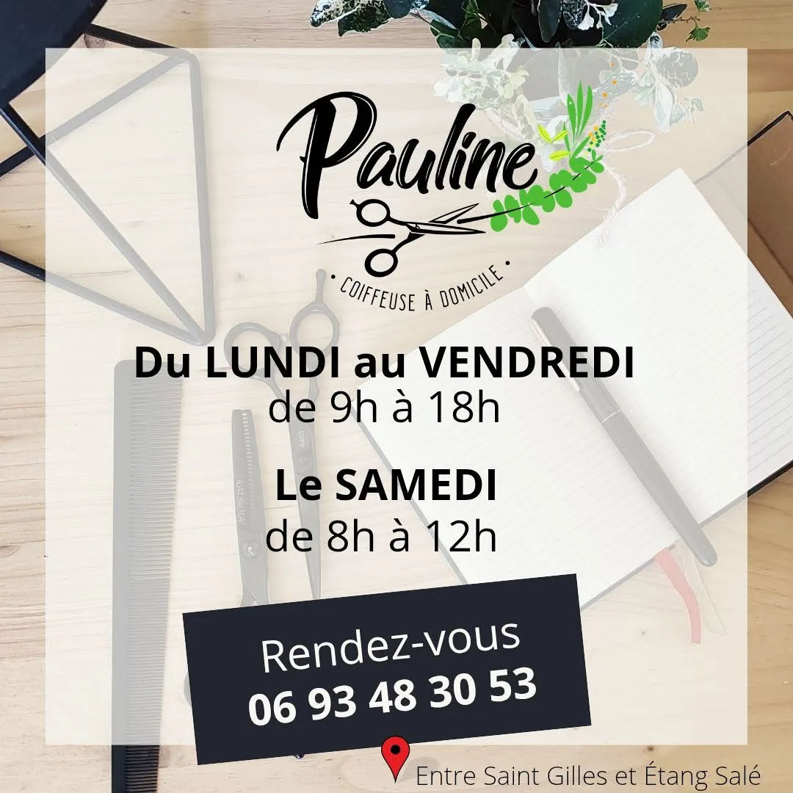
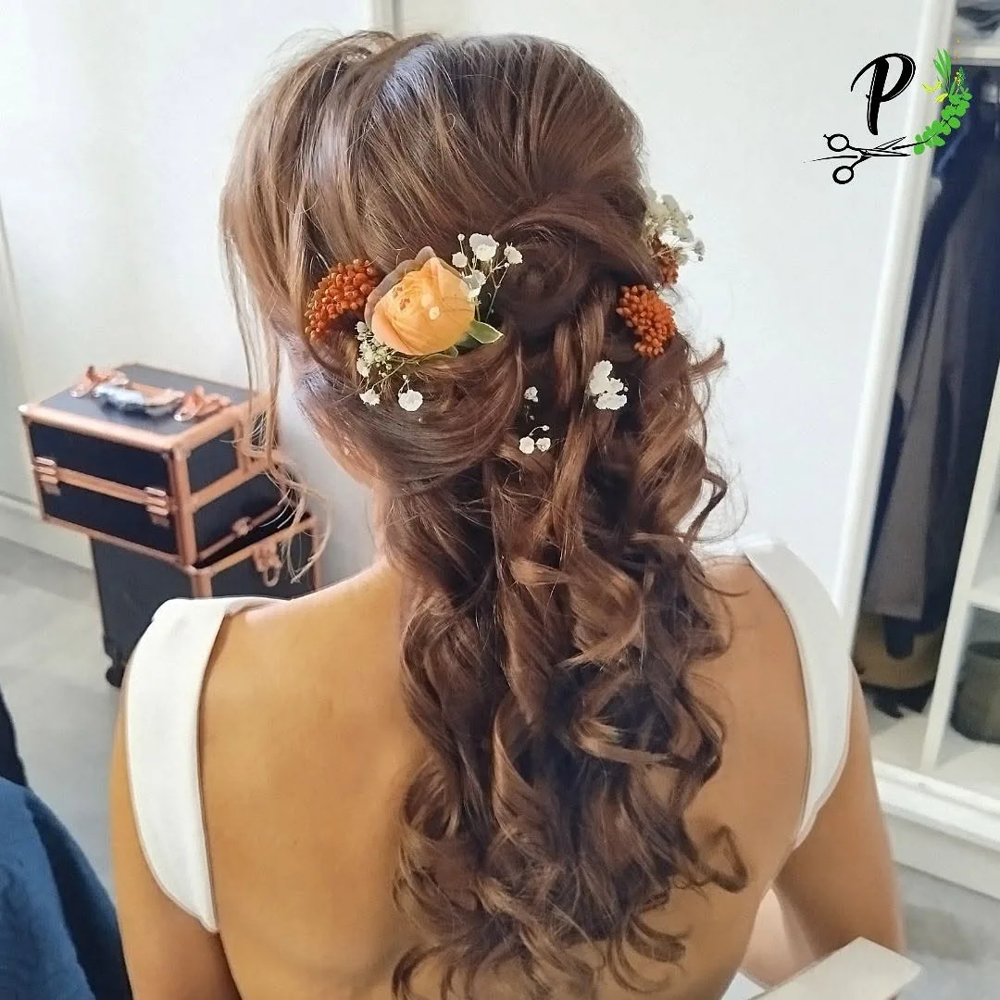

Coiffeuse à domicile · Ouest de La Réunion
PaulineCoupe, brushing, coloration 100 % végétale, lissage ou coiffure de mariée : Pauline vient à vous, avec ses conseils de professionnelle, pour le quotidien comme pour les grands jours.

Les prestations
Pour une coupe de tous les jours, un événement ou un vrai changement, Pauline prend le temps de vous écouter et de vous conseiller, chez vous, en toute intimité.
La coupe qui vous ressemble, avec les conseils d'une coiffeuse professionnelle.
Un coiffé net et lumineux, pour le quotidien comme pour une sortie.
Une coloration 100 % végétale et naturelle, et des mèches douces qui ramènent la lumière.
Des cheveux lisses, brillants et disciplinés, pour 5 à 6 mois de tranquillité.
Réalisations




Où et quand
Pauline se déplace entre Saint-Gilles et L'Étang-Salé, sur rendez-vous. Un message suffit pour trouver ensemble le bon créneau.

Mariages & événements
Le grand jourChignons ornés de perles, boucles fleuries : Pauline vous coiffe là où vous vous préparez, pour vivre la matinée sereinement, entourée de vos proches.
Rendez-vous